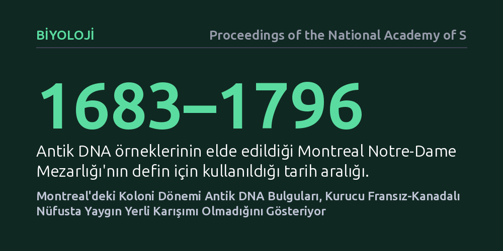

BIYOLOJI · Proceedings of the National Academy of Sciences · 2026-10-24
Montreal'deki 1683–1796 yıllarına ait Notre-Dame Mezarlığı'ndan çıkarılan antik DNA'lar incelenerek erken dönem Fransız-Kanadalı kurucu nüfusun kökeni araştırıldı. Analizler, bu toplulukta sanılanın aksine yaygın bir Yerli genetik karışımı bulunmadığını ve soyun ezici çoğunlukla doğrudan Fransa'ya dayandığını ortaya koydu.
Bu bulgu, Fransız-Kanadalıların erken sömürge döneminde Yerlilerle geniş çapta karıştığı yönündeki yaygın tarihsel anlatıların ve kimlik iddialarının genetik gerçeklerle örtüşmediğini gösterir.

Kuzey Amerika'nın sömürgeleşme sürecinde, Fransa'dan Yeni Fransa'ya (bugünkü Quebec) göç eden ilk Avrupalı yerleşimciler ile kıtanın yerli halkları arasındaki ilişkiler uzun yıllardır hem tarihçilerin hem de toplumun en çok tartıştığı konulardan biri olmuştur. Popüler kültürde ve bazı tarihsel anlatılarda, erken dönem Fransız yerleşimcilerin yerli kadınlarla yoğun biçimde evlendiği ve bugünkü Fransız-Kanadalı nüfusun önemli ölçüde melez bir temele dayandığı fikri geniş kabul görmüştür. Hatta günümüzde bu anlatı, bazı topluluklar tarafından yerli kimliği ve yasal hak talepleri için tarihsel bir dayanak olarak da kullanılmaktadır.
Ancak bu iddialar uzun süre boyunca somut ve doğrudan biyolojik kanıtlardan yoksun kaldı. Günümüz insanlarından alınan genetik veriler geçmişe dair bazı ipuçları verse de aradan geçen yüzyıllar, göç dalgaları ve demografik değişimler tablonun netleşmesini engelliyordu. Fransız-Kanadalıların kurucu kuşağının gerçekten yerli halklarla biyolojik olarak karışıp karışmadığını kesin olarak anlamak, sömürge döneminde bizzat yaşamış insanların doğrudan biyolojik kalıntılarını incelemeyi gerektiriyordu.
Araştırmacılar bu soruyu yanıtlamak için Kanada tarihinin en önemli erken sömürge merkezlerinden biri olan Montreal'e odaklandı. Kentte 1683 ile 1796 yılları arasında aktif olarak kullanılan Notre-Dame Mezarlığı, sömürge döneminin ilk kurucu kuşaklarına ait eşsiz bir biyolojik arşiv sunuyordu. Bu mezarlıkta yatan bireyler, Yeni Fransa'nın kentleşme aşamasında bizzat yaşamış, şehri kurmuş ve bugünkü Quebec nüfusunun genetik çekirdeğini oluşturmuş insanlardı.
Bilim insanları mezarlıktan çıkarılan iskelet kalıntılarından antik DNA (aDNA) elde ederek son derece hassas laboratuvar analizleri gerçekleştirdi. Yüzyıllar boyunca toprak altında kalan kemiklerden elde edilen genetik materyal özel yöntemlerle saflaştırıldı ve yüksek verimli dizileme teknolojisiyle okundu. Elde edilen antik genom verileri; hem Fransa'nın farklı bölgelerindeki tarihsel ve modern Avrupa nüfuslarıyla hem de Kuzey Amerika'nın Yerli halklarına ait genetik referans panelleriyle kapsamlı şekilde karşılaştırıldı.
Antik DNA verilerinin analizi, genel kabul gören 'yaygın karışım' varsayımlarını tamamen boşa çıkardı. İncelenen erken dönem Montreal sakinlerinin genetik profili, neredeyse istisnasız biçimde doğrudan Fransa kökenliydi. İskeletlerden elde edilen hem anne soyunu aktaran mitokondriyal DNA hem de baba soyunu aktaran Y-kromozomu verileri, sömürgecilerin büyük ölçüde Fransa'nın batı ve kuzeybatı bölgelerinden gelen göçmenlerin soyundan geldiğini kesin olarak doğruladı.
Amerika Yerlilerine özgü genetik izler ise incelenen bireylerde ya hiç bulunamadı ya da istatistiksel olarak ihmal edilebilecek düzeyde kaldı. Çalışmanın yazarları, bulgularının Fransız-Kanadalıların “yerleşimci kökenli melez” bir nüfus olarak tanımlandığı yaygın anlatılara doğrudan meydan okuduğunu belirtmektedir. Sonuçlar, ilk yerleşimciler ile yerli halklar arasında kültürel ve ticari temaslar bulunsa bile, bunun kurucu nüfus düzeyinde yaygın bir biyolojik karışıma dönüşmediğini açıkça ortaya koydu.
Bu araştırmanın sonuçları, biyolojik antropolojinin ötesine geçerek sömürge dönemi tarih yazımını ve modern kimlik tartışmalarını doğrudan etkilemektedir. Bulgular, geçmişe dönük romantik veya siyasi saiklerle üretilen melezleşme anlatılarının, gerçek biyolojik geçmişle her zaman örtüşmeyebileceğini göstermektedir. Erken dönem Fransız-Kanadalı toplumu, genetik açıdan sanılandan çok daha kapalı ve Avrupa kökenlerini neredeyse bütünüyle koruyan bir kurucu yapı sergilemiştir.
Bununla birlikte, çalışmanın tek bir kent merkezindeki mezarlığa dayanması gibi sınırlılıkları göz önünde bulundurulmalıdır. Kürk ticareti yapılan iç karakollarda veya kırsal sınır bölgelerinde yerel düzeyde münferit karışımlar yaşanmış olabilir; ancak Montreal gibi ana yerleşim merkezindeki kurucu kütlenin genetik temeli kesin olarak Fransa'ya dayanmaktadır. Bilim insanları için bir sonraki adım, farklı coğrafi noktalardan elde edilecek yeni antik DNA örnekleriyle dönemin demografik haritasını daha da ayrıntılandırmak olacaktır.